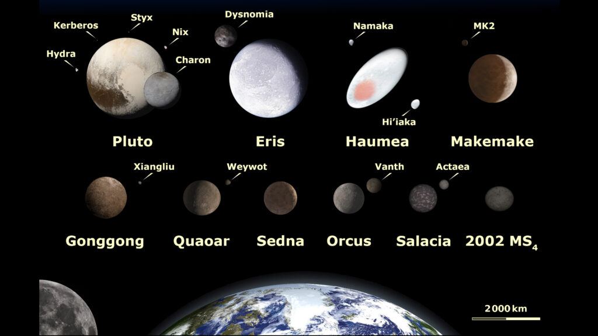
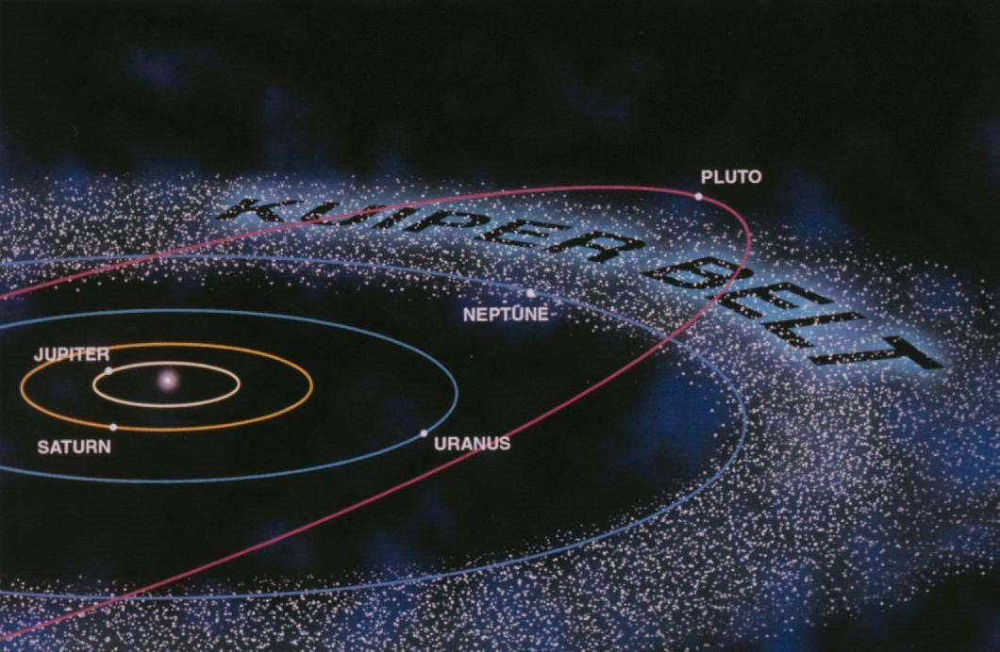

Le système solaire
Un peu d'histoire
L'histoire du système solaire remonte à environ 4,6 milliards d'années. Au début, une vaste nébuleuse de gaz et de poussières s'est contractée sous l'effet de la gravité, formant un disque protostellaire. Au centre, une protoétoile s'est formée, devenant notre Soleil. Autour de lui, des agrégats de matière ont commencé à s'assembler, donnant naissance aux planètes, dont la Terre. Ce processus d'accrétion a également conduit à la formation des lunes, astéroïdes et comètes.
Au fil du temps, le jeune système solaire a été marqué par des collisions violentes entre les corps célestes en formation, événements qui ont façonné les orbites et les caractéristiques des planètes. La Terre, par exemple, a subi un impact majeur qui a créé la Lune il y a environ 4,5 milliards d'années.
Depuis lors, le système solaire a connu des périodes de stabilité relative, mais aussi des périodes d'intense activité volcanique et de bombardements météoritiques. Au cours de ces milliards d'années, les planètes se sont lentement équilibrées, et la vie a émergé sur Terre il y a environ 3,5 milliards d'années.
L'observation du ciel a évolué au fil du temps, des observations astronomiques antiques à la révolution copernicienne au XVIe siècle, où Nicolaus Copernicus a proposé un modèle héliocentrique du système solaire. Cela a été suivi par les découvertes de Johannes Kepler et de Galileo Galilei, qui ont renforcé notre compréhension de la mécanique céleste.
Au XIXe siècle, l'avènement de la théorie de la gravité d'Isaac Newton a fourni une explication solide des mouvements planétaires, et au XXe siècle, la théorie de la relativité générale d'Albert Einstein a affiné notre compréhension de la gravité.
Aujourd'hui, grâce aux missions spatiales et aux avancées technologiques, notre connaissance du système solaire a considérablement augmenté. Nous continuons d'explorer ses mystères, découvrant de nouvelles lunes, étudiant les conditions sur Mars et les lunes de glace, et cherchant des signes de vie au-delà de notre planète. L'histoire du système solaire se poursuit, s'enrichissant de nouvelles découvertes et percées scientifiques.
Dessin de Galilée représentant les phases de Vénus. Pour la première fois on a pu comprendre que les planètes ressemblaient à la Terre, et donc que la Terre était probablement une planète comme les autres. Ce dessin, entre autre, a boulversé notre façon de voir l'univers et la place que l'homme y occupe.
Sa composisition
Les planètes
Voici dans l'ordre, les différentes planètes du système solaire:
- Mercure : En raison de sa proximité avec le Soleil et de sa faible luminosité, Mercure était déjà connue dans l'Antiquité. Cependant, sa nature planétaire n'a été établie qu'au XVIIe siècle par Galilée, qui l'a observée pour la première fois à l'aide d'une lunette astronomique.
- Vénus : Également connue depuis l'Antiquité en tant qu'"étoile du berger" en raison de sa brillance, Vénus a été considérée comme deux objets distincts - l'étoile du matin et l'étoile du soir. Son statut de planète a été confirmé par Galilée au début du XVIIe siècle.
- Terre : Vous êtes ici!
- Mars : La planète rouge a été observée dès l'Antiquité. Johannes Kepler a établi son orbite elliptique au début du XVIIe siècle, et au XIXe siècle, des astronomes comme Giovanni Schiaparelli ont décrit des "canaux" sur sa surface, suscitant des débats sur l'existence de vie.
- Jupiter : Également observée depuis l'Antiquité, Jupiter est la plus grande planète du système solaire. Galilée a été le premier à l'observer avec une lunette astronomique en 1610, découvrant ses principales lunes, les satellites galiléens : Io, Europe, Ganymède et Callisto.
- Saturne : Connue depuis l'Antiquité, la première observation détaillée de Saturne a été faite par Galilée en 1610, qui a découvert ses anneaux. Cependant, il les a confondus avec des poignées latérales. Ce n'est qu'en 1659 que Christiaan Huygens a correctement identifié les anneaux comme étant composés de particules solides.
- Uranus : Cette planète n'a pas été identifiée dans l'Antiquité en raison de sa faible luminosité. Ce n'est qu'en 1781 que l'astronome William Herschel a découvert Uranus à l'aide d'un télescope, marquant la première découverte d'une planète au-delà de Saturne.
- Neptune : Son existence a été postulée en raison des irrégularités observées dans l'orbite d'Uranus. En 1846, l'astronome français Urbain Le Verrier et l'astronome britannique John Couch Adams ont indépendamment prédit la position de Neptune. Sa découverte a été confirmée peu de temps après par l'astronome allemand Johann Galle.
- Pluton : Découverte en 1930 par l'astronome américain Clyde Tombaugh, Pluton a été considérée comme la neuvième planète du système solaire pendant des décennies. Cependant, en 2006, elle a été rétrogradée au statut de "planète naine" par l'Union astronomique internationale, en raison de l'émergence de nouveaux critères de définition des planètes.
Les planètes naines et les objets transneptuniens
Les planètes naines
Les planètes naines, un groupe intrigant d'objets célestes, ajoutent une nuance fascinante à la diversité du système solaire. Parmi elles, Pluton, découverte en 1930, a longtemps été considérée comme la neuvième planète avant d'être reclassifiée en 2006. Située au-delà de l'orbite de Neptune, Pluton est accompagnée par Charon, sa lune la plus massive.
Éris, une autre planète naine, a été identifiée en 2005 et a suscité des débats sur la définition des planètes. Ces mondes lointains, tels que Makemake et Hauméa, apportent un éclairage sur les confins du système solaire et sur les processus d'accrétion et de formation qui ont façonné notre environnement cosmique. Les missions spatiales, comme celle de la sonde New Horizons vers Pluton, continuent de révéler des détails intrigants sur ces planètes naines et leur rôle dans la compréhension de l'évolution du système solaire.
Les objets transneptuniens (TNO)
Les objets transneptuniens ne se limitent pas seulement aux planètes naines. Il existe une multitude d'autres petits corps qui sillonnent cette région éloignée. Les centaures, par exemple, sont des astéroïdes gelés qui ont des orbites instables entre les régions extérieures des géantes gazeuses et les objets de la ceinture de Kuiper. Cette dernière est une structure en forme d'anneau située au-delà de Neptune, composée de milliards d'objets glacés et de débris provenant des débuts du système solaire.
L'étude de ces objets transneptuniens fournit des informations cruciales sur la matière primitive à partir de laquelle les planètes et d'autres corps célestes se sont formés.
Bien que les objets transneptuniens soient restés largement inexplorés pendant de nombreuses années en raison de leur distance et de leur faible luminosité, les missions spatiales récentes ont commencé à lever le voile sur leur nature et leur composition. La sonde New Horizons, par exemple, a survolé Pluton en 2015, nous fournissant des images détaillées et des informations sur sa surface, son atmosphère et sa géologie. De plus, la mission OSIRIS-REx s'est rendue à l'astéroïde Bennu, un objet de la ceinture de Kuiper, pour collecter un échantillon et ainsi mieux comprendre la composition de ces objets lointains.
Astéroïdes et comètes
Les comètes et les astéroïdes, deux classes d'objets célestes fascinantes, jouent un rôle clé dans la compréhension de l'histoire et de la dynamique du système solaire. Les comètes, composées de glace, de poussière et de gaz, sont souvent décrites comme les "boules de neige sales" du cosmos. Originaires principalement de la ceinture de Kuiper et du nuage d'Oort, situés aux confins du système solaire, elles effectuent des orbites elliptiques autour du Soleil. Lorsqu'une comète se rapproche du Soleil, la chaleur provoque la sublimation de la glace, libérant des gaz et des particules qui forment la caractéristique queue lumineuse. Les comètes, telles que la célèbre comète de Halley, offrent des indices précieux sur la composition des régions extérieures du système solaire et le matériel primordial à partir duquel les planètes se sont formées.
D'un autre côté, les astéroïdes, de petites roches et métaux, peuplent principalement la ceinture d'astéroïdes entre les orbites de Mars et Jupiter, bien qu'ils soient également présents ailleurs dans le système solaire. Certains astéroïdes sont si grands qu'ils ont été classés comme planètes naines, comme Cérès. Les astéroïdes sont des témoins des processus de formation planétaire qui n'ont pas abouti à la création de planètes complètes. Ils ont joué un rôle clé dans l'histoire géologique de notre système solaire, témoignant des impacts cataclysmiques et des collisions qui ont façonné les planètes et les autres corps célestes. De plus, les astéroïdes suscitent un intérêt croissant en raison de leur potentiel pour les missions spatiales et l'exploitation minière, ainsi que pour leur implication potentielle dans les risques d'impact avec la Terre.
Photo de la comète 67P prise par la sonde Rosetta au confin du système solaire. La sonde a survollé la comète suffisament loin du Soleil afin de l'analyser avant qu'elle ne chauffe trop et que sa glace se transforme en gaz. L'analyse de cette comète a apporté des réponses fondamentales sur l'origine de l'eau et de la vie sur Terre
Appréhender la démesure de sa taille
Les distances dans le système solaire
| Objets | Distance (UA*) | Temps nécessaire à la lumière | Temps nécessaire en avion |
|---|---|---|---|
| Mercure | 0.39 | 3,2 minutes | 6,6 ans |
| Vénus | 0.72 | 6,0 minutes | 12,2 ans |
| Terre | 1 | 8,3 minutes | 17 ans |
| Mars | 1.52 | 12,4 minutes | 25,8 ans |
| Jupiter | 5.20 | 43,2 minutes | 88 ans |
| Saturne | 9.58 | 1 heure et 21 minutes | 162,8 ans |
| Uranus | 19.22 | 2 heures et 42 minutes | 326,7 ans |
| Neptune | 30.05 | 4 heures et 10 minutes | 510,8 ans |
| Ceinture de Kuiper | de 30 à 50 | de 4 heures et 9 minutes à 6 heures et 55 minutes | de 510 ans à 850 ans |
| Nuage d'Oort (début) | de 2000 à 100000 | de 11,5 jours à 1 an et 7 mois | de 34000 ans à 1 millions 700 000 ans |
* L'unité astronomique (UA) correspond à la distance moyenne entre la Terre et le Soleil. Soit 149,6 millions de kilomètres.
Mise à l'échelle
Si on met à l'échelle le Soleil à la même taille qu'un de ballon de basket (24 centimètre de diamètre). Alors la Terre aurait un diamètre de 2,2 millimètres et serait à 25 mètres du Soleil. Neptune serait à 775 mètres. Le nuage d'Oort commencerait à 50 kilomètres et se terminerait à 2500 kilomètres du Soleil! Même si on réduisait le Soleil à la taille d'un ballon de basket on n'arriverait pas à sortir du système solaire à pied!